R2-v2 · 29 October 2026 · Owner visual feedback pending
One sentence.
The whole relationship in view.
A focused R2 revision: clearer explanation, one-screen mobile lessons, and a divider that owns its touch gesture.
Try R2-v2 Compare R2-v1 · Accepted R1-v1
What changed after your feedback
- The explanatory sentence is the heading. Decorative and repeated copy has gone. Assumptions and readable current figures are one button away.
- The mobile scene stays composed instead of growing from 460 to 690 SVG units. Play, pause, replay and progression stay with the sentence and connected illustration.
- The divider has a minimum 44 CSS-pixel hit area, retains your grab offset, and captures one primary pointer through reversal, outside release and cancellation. The SVG owns single-finger gestures while pinch zoom remains available.
- Pricing explains 80% in words and marks the boundary in the house. The fictional rate changes discretely with the attached interest area; borrowing less at the unchanged rate remains the earlier lesson.
- The payment strip travels around the capital labels before unfolding. The same object stays inside the fixed mortgage-plus-saving budget, sharing its boundary with money available to save.
Watch at normal speed
Unedited 1× Chromium recordings with reading pauses and ordinary button/touch input. No scrolling is needed to follow a lesson; no retiming, compositing or fabricated frames. The live experience waits for you to advance.
Laptop · 1280 × 720
Mobile · 390 × 844 emulation
Open mobile recording · Emulation, not a physical phone.
Try the relationships
Move the same savings into the deposit, then reverse. Compare fixed-rate interest with pricing. Enter £79,999, £80,000 and £80,001 in both directions. Pause a transition, change lessons while playing, and drag near the divider before releasing outside it. Your selected deposit persists.
Watch the payment shrink against the growing saving space in the same £2,000 monthly budget for mortgage payments plus saving/investing. Monthly opportunity is separate from cash kept on purchase day.
The unchanged fictional example
£400,000 home, £100,000 allocatable cash after separately funded costs, £40,000–£100,000 deposit, and a 30-year repayment mortgage. The guide transfers all £60,000 of remaining savings. £0 retained cash is an illustrative extreme, not a recommendation.
The first interest lesson holds fictional 4.5% for all 30 years. Later lessons compare alternative opening mortgages: fictional 4.5% above 80% initial borrowing, 4.0% at/below it, fixed for the illustrated term. Paying down an existing mortgage does not automatically reset its rate. Repayment includes principal and interest: interest and payment savings are not two benefits to add.
The financial fixtures and engine are unchanged. All 60,001 serialized choices were rechecked against an independent 100-digit Decimal annuity reference, including conservation, rate selection, repayment and budget consistency. Guided capital labels share one nearest-£1,000 fixture; geometry stays continuous and stopped values remain exact whole-pound selections. Full-precision examples, provenance and allocation ledgers.
Verification and limitations
Rerun: 5 Node tests; 3 Python tests including all 60,001 states; behavioral browser checks and chapter announcements; 25 fit cases across 390×844, 390×664, 320×568, 1280×720 and 1440×1000; 9 touch cases; 3 accessibility/reflow cases; sampled forward/backward payment and budget transitions, including pause. No reported axe violations in tested page/dialog states.
Coverage includes exact entry, both pricing directions, constant house and conserved capital, persistent SVG objects, keyboard, pause/resume/replay, cancellation, retained state, reduced motion and preference changes, 200% HTML text, emulated pinch zoom and half-size desktop reflow. The latter represents the CSS viewport at 200% zoom, not a full browser-UI zoom audit.
Independent review caught narrow wrapping and paused payment overlap; failing regressions and fixes are retained. Reopening exact entry now clears stale invalid-entry feedback. Author review covers screenshots, paused transitions and decoded recording frames; timing telemetry checks 1× playback. This does not establish novice comprehension or owner motion acceptance.
Browser results · Fit results · Touch results · Access results · Transition results · Capture results · Media results · Preservation results
- No physical-device, Safari/Firefox, screen-reader speech or novice study.
- The proportional divider has short travel on a phone; exact entry and keyboard remain available.
- Enlarged text/zoom may reflow into a scrollable page or panel so nothing becomes unreachable. Default tested lessons fit.
- Interest has a separate graphical scale. Monthly saving capacity is a flow; nothing accumulates into investment wealth.
- No R3, investment growth, optimisation, final calculator or main merge. The full legacy backend suite was not rerun for presentation-only work.
Source and publication
Source branch design/m8-r2-v2, based exactly on 8ffbc5444a3abd7ffc9cd89aa5ecb08ecde35d00. Tested build source: 7b48350c9032d5b0d604e68852ac9a148f257fc5.
Exact source and publication commits · Review manifest · SHA-256 asset manifest. Prior iteration trees remain unchanged; neither main branch is merged.
Key states and transitions

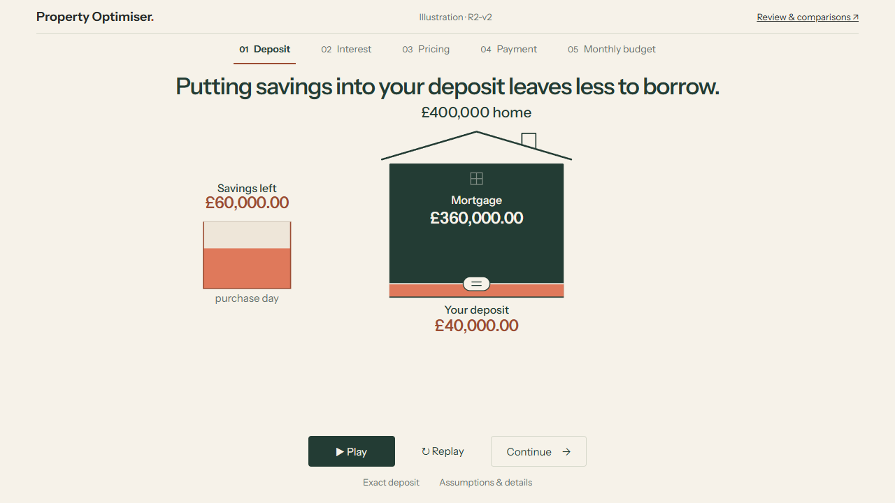

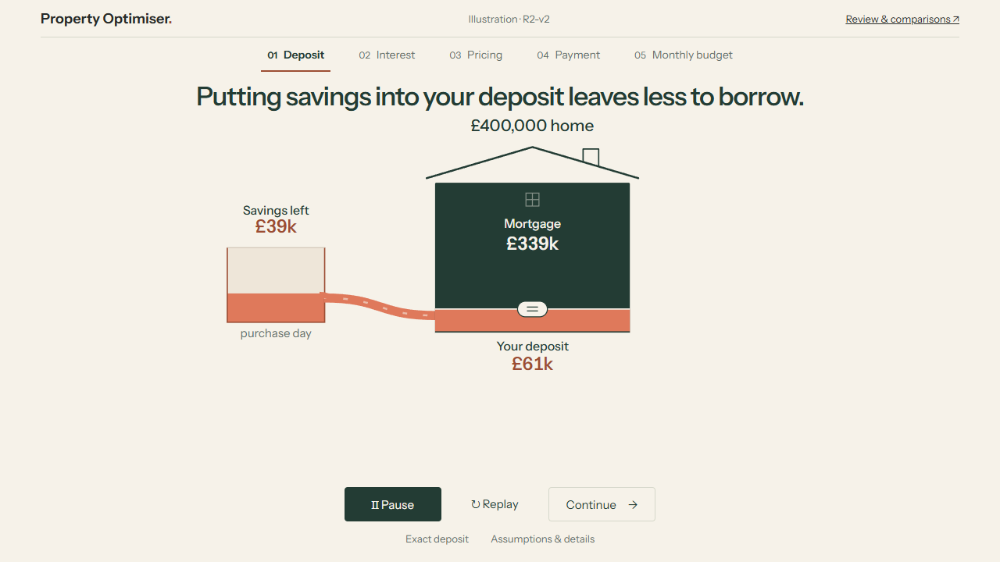

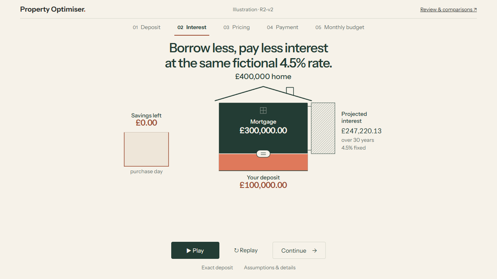

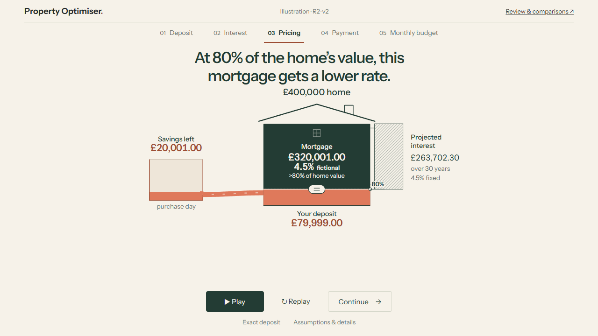


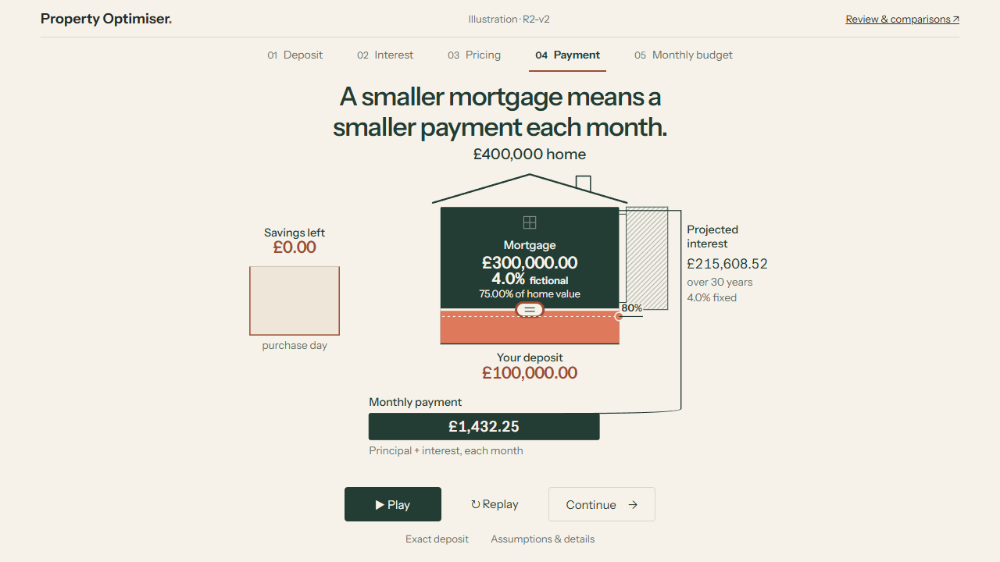

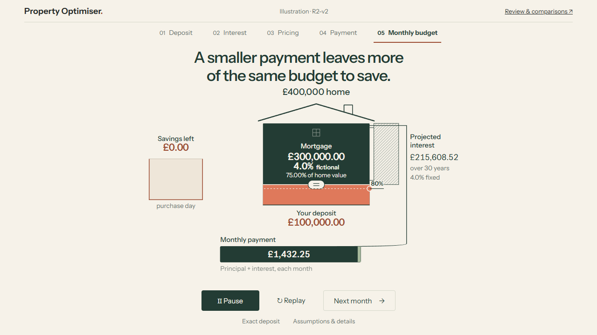

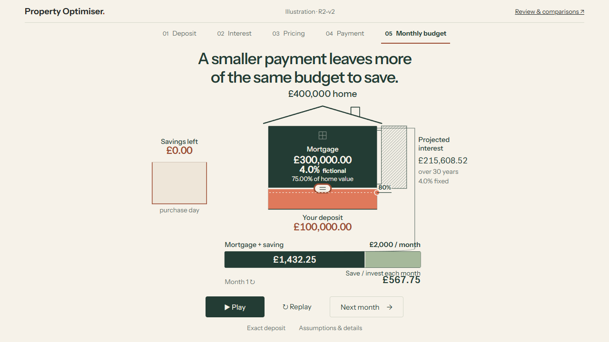

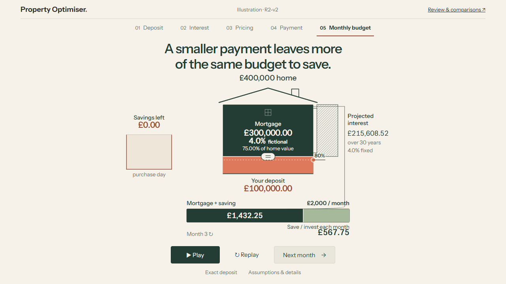

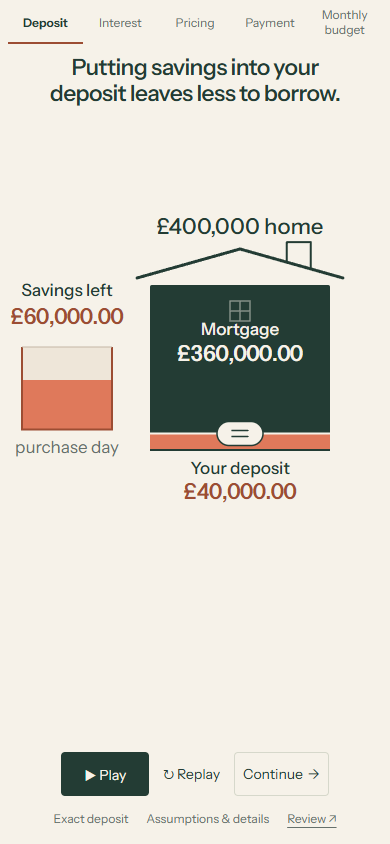


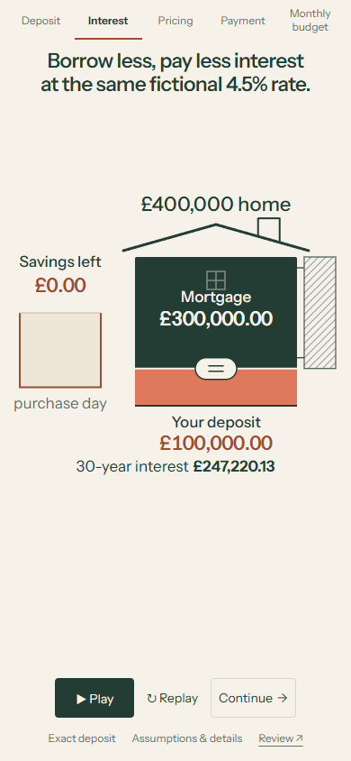


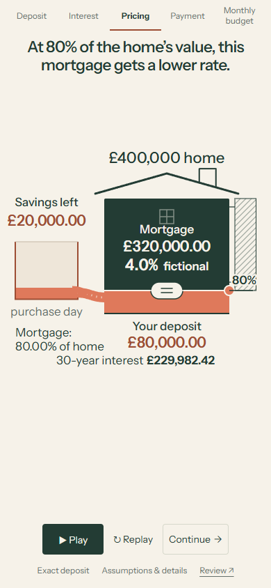


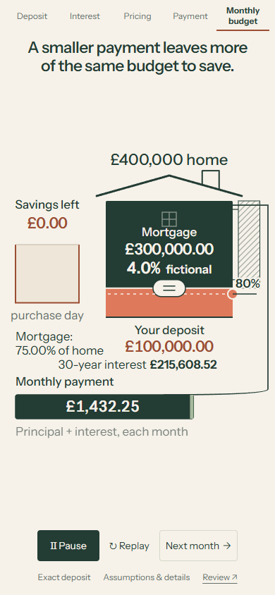

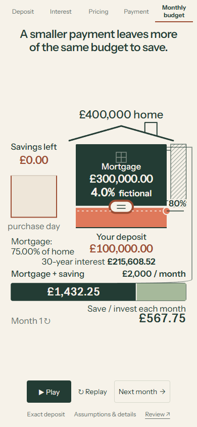

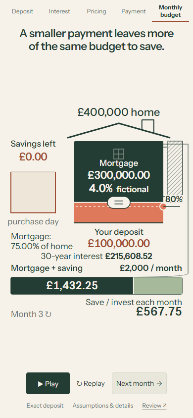
Owner review
Does the prominent sentence make the movement easier to follow, and can you manipulate the complete lesson comfortably on your phone? ACCEPT / REVISE / TRY ALTERNATIVE / STOP. R2 remains pending; no R3 begins here.
R1-v1 · R2-v1 · R0-v1 · R0-v2 · Earlier studies